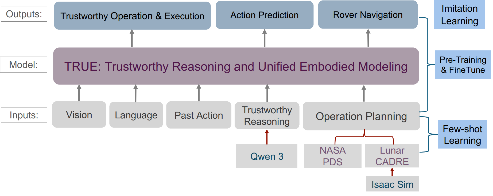
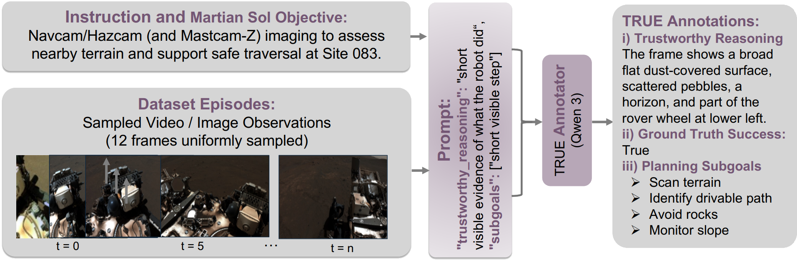

TRUE: TRUE: A Trustworthy Reasoning and Unified Embodied Intelligence Benchmark for Multimodal Robotics
TRUE is a multimodal robotics benchmark for evaluating whether embodied AI systems can produce reliable actions, ground their reasoning in visual observations and language instructions, and generalize across diverse embodied settings beyond standard tabletop manipulation like planetary robotics.
If the paper is accepted, we will provide link to the code.
Figures

